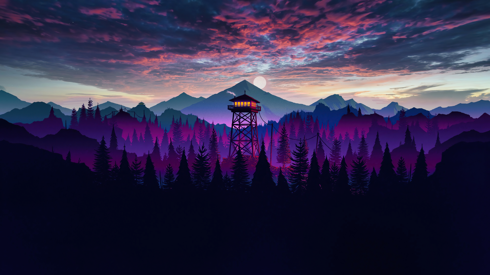
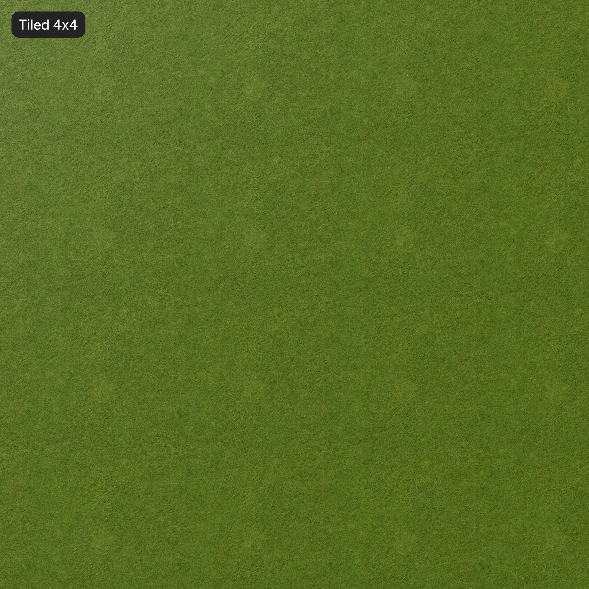

Rotate Slice:
U (Up)
D (Down)
L (Left)
R (Right)
F (Front)
B (Back)
M (Middle Horizontal)
M (Middle Vertical)
M (Middle Z Axis)
U' (Reverse Up)
D' (Reverse Down)
L' (Reverse Left)
R' (Reverse Right)
F' (Reverse Front)
B' (Reverse Back)
M' (Reverse Middle Horizontal)
M' (Reverse Middle Vertical)
M' (Reverse Middle Z Axis)
Tip: Use Q and E to move up and down
Press Shift to go faster

